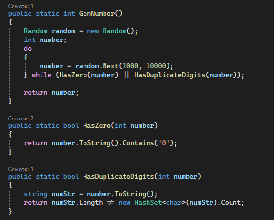
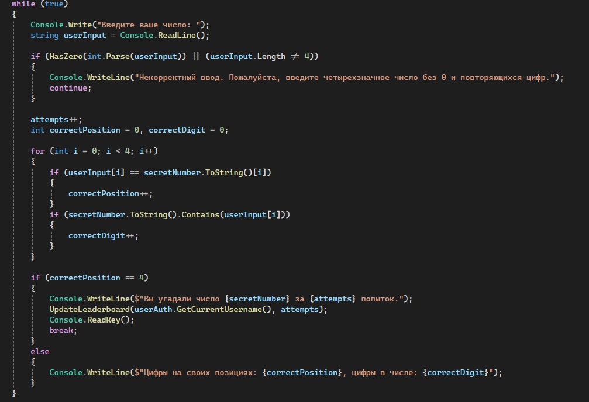
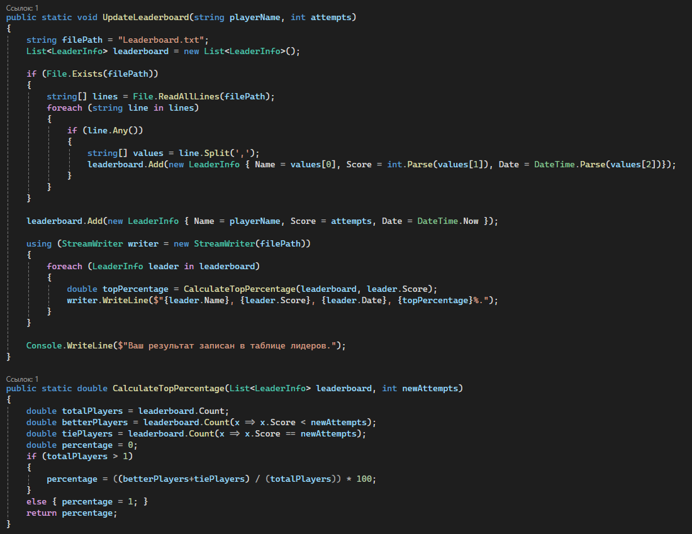

Тема работы: создание аналога игры "Быки и коровы" на C#
Рассмотрим логику генерации числа. Мы будем играть рассматривать только те числа, у которых все цифры разные и отсутствует 0 в записи. Это поможет упростить игру для пользователя. Генерацию числа будем производить при помощи класса Random, а проверку на наличие 0 при помощи метода Contains. Наличие же повторяющихся цифр в числе реализуем с использованием HashSet для сравнения длины исходного числа и размера HashSet'а, полученного из данного числа (HashSet содержит только уникальные значения). Указанная логика представлена на рисунке:

А на следующей картинке представлена логика непосредственного отгадывания числа:

Имеем бесконечный цикл, который проверяет правильность введенного числа и при вводе числа пользователем выводит количество цифр на своем месте и общее количество отгаданных цифр загаданного числа. Работа прекращается, когда пользователь отгадывает число.
Ниже представлена логика записи результата игрока в файл и чтения из файла результатов предыдущих игроков для составления статистики. Особый метод CalculateTopPercentage используется для подсчета "топа" игрока среди всех игроков.

Это основная логика данной игры! Группа: СО231КОБ.